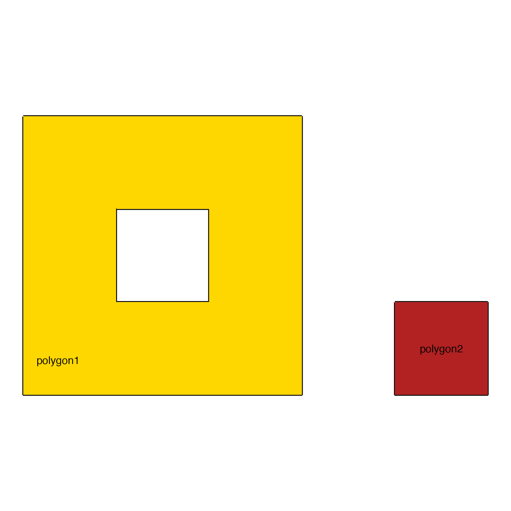
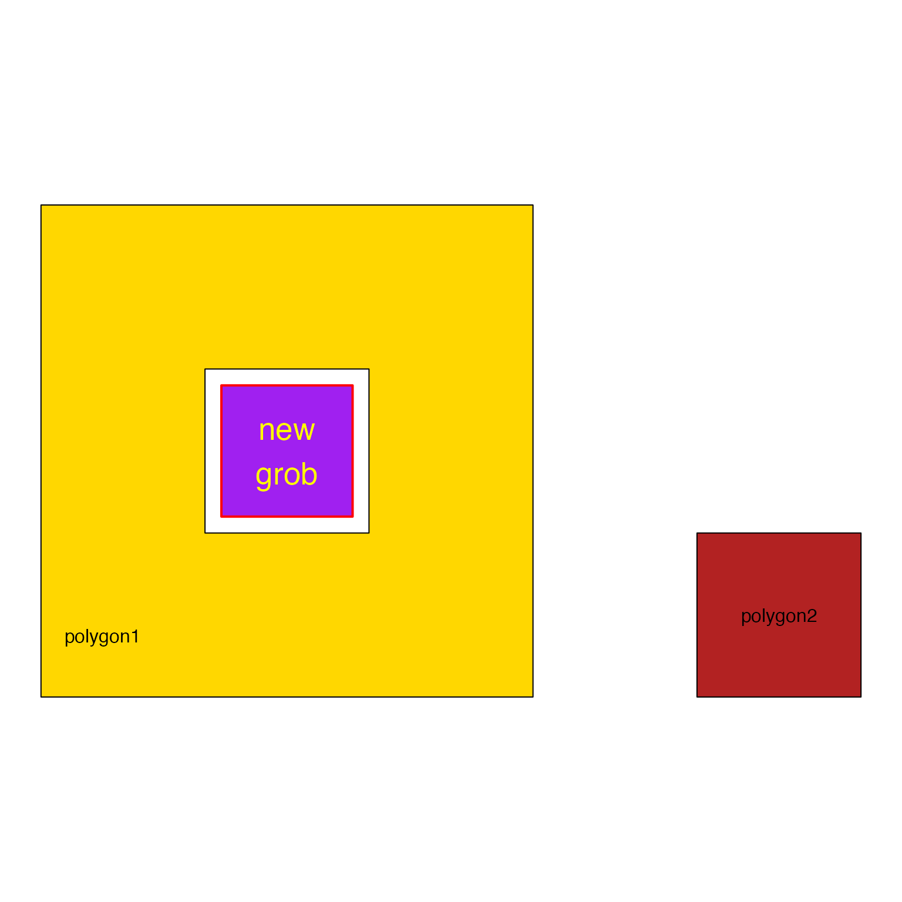

Plot JamPolygon object
# S3 method for JamPolygon
plot(
x,
y,
xlim = NULL,
ylim = NULL,
flip_sign = 1,
render_vectorized = FALSE,
linejoin = c("bevel", "mitre", "round"),
mitrelimit = -20,
show_labels = TRUE,
buffer = 0.05,
do_newpage = TRUE,
do_viewport = TRUE,
do_pop_viewport = TRUE,
do_draw = TRUE,
verbose = FALSE,
debug = FALSE,
...
)JamPolygon object
not used.
numeric optionally used to define the x- and y-axis
range to be rendered. When NULL they are defined using the
observed range of values.
logical indicating whether to flip the polygon
orientation, or numeric where the sign is multiplied by the
polygon orientation.
The polygon orientation is used to define inner/outer border, relative
to whether the border represents a solid inner polygon, or the hole
inside a solid polygon. In most cases, the orientation is automatically
recognized and applied appropriately.
Specifically:
TRUE or -1 reverses the polygon orientation of
inner/outer border
FALSE or 1 keeps the polygon orientation unchanged.
logical indicating whether to render all
polygons in one call, thereby ignoring innerborder values. All
border values are rendered as regular polygon borders. This option
may be substantially faster for large collections of polygons.
character string (default "bevel") passed to
grid::grid.path() and vwline::grid.vwline() when rendering
polygons, and inner/outer polygon borders, respectively.
Note that vwline version 0.2.2 displayed some graphical glitches
when used with "mitre" and "round", so "bevel" is the new default.
numeric passed to vwline::grid.vwline() to adjust
the maximum extension at a line join caused by linejoin="mitre".
logical indicating whether to render labels for
each polygon. Note that labels are rendered after all polygons are
drawn, so they will not be covered by other polygons.
numeric used to expand the x- and y-axis range beyond
the polygons to be drawn.
logical (default TRUE) indicating whether to call
grid::grid.newpage() to open a new graphical output page.
logical (default TRUE) indicating whether to define
and push a new grid viewport with grid::grid.pushViewport().
logical (default TRUE) indicating whether to
close/pop the grid viewport with grid::popViewport().
This action is only performed when do_viewport=TRUE.
This option is intended to allow layering multiple calls to this
or other grid functions.
logical (default TRUE) indicating whether to call
grid::grid.draw() for each graphical object.
When do_draw=FALSE, it also forces do_newpage=FALSE,
do_viewport=FALSE, and do_pop_viewport=FALSE.
logical indicating whether to print verbose output.
logical (default FALSE) indicating whether to enable
debug operations. When debug=TRUE it is also passed to grid
functions such as vwline::grid.vwline() to display internal
calculations in the graphical output.
additional arguments are recognized to customize plot features.
JamPolygon object, invisibly. Some grid attributes are
added to the returned object:
"adjx","adjy": functions to adjust native x/y values to
the corresponding grid units in "snpc".
"viewport": the grid::viewport() object suitable to push
the same viewport in order to add features to an existing plot.
"xrange","yrange": x- and y-axis ranges used to determine
the viewport to be used.
"grob_tree": a grid::gTree object suitable to call
grid::grid.draw(). It includes the same viewport, so it
does not need to have the viewport defined.
This function is a general purpose function to plot JamPolygon
objects using grid graphics.
It currently calls direct rendering functions, for example
grid::grid.path(), grid::grid.lines().
Rendering guidelines used by this function:
Each polygon is rendered in order, and in series.
All polygon labels are rendered afterward, so that labels are not covered by subsequent polygons.
jp@polygons:name, label - name and display label. A label of NA or ""
will not be rendered.
label_color - color used to render each polygon label.
family, fontsize - font family, and font point size used to render
each polygon label.
x, y - x- and y-coordinates to define each polygon or multipolygon.
fill - polygon fill color, or NA for no fill color.
border, border.lwd - border color and line width (outer border)
innerborder, innerborder.lwd - inner border and line width
Todo:
Enable arguments in ... to override equivalent values in columns of
jp@polygons.
Convert grid rendering to generate graphical objects (grobs)
which can be optionally rendered, or returned as a gTree.
Continue debugging the vwline graphical glitches which are
apparent when rendering outer borders.
See https://github.com/pmur002/vwline/issues/2.
Current recommendation is to render outer border after the inner border, and with outer border at least the same or larger width as the inner border. Otherwise, for acute angles, inner border may exceed the outer border because of its line width. However, if the outer border is drawn afterward, it will fully cover the inner border. With sufficiently small inner border width, the graphical glitch may not be apparent.
Consider allowing labels for each multi-part polygon.
Consider drawing optional x- and y-axis, although both could be added
using grid functions.
Other JamPolygon:
JamPolygon-class,
Venndir-class,
add_orientation_JamPolygon(),
area_JamPolygon(),
bbox_JamPolygon(),
buffer_JamPolygon(),
check_JamPolygon(),
check_Venndir(),
eulerr_to_JamPolygon(),
farthest_point_JamPolygon(),
find_venn_overlaps_JamPolygon(),
has_point_in_JamPolygon(),
intersect_JamPolygon(),
label_fill_JamPolygon(),
label_outside_JamPolygon(),
label_segment_JamPolygon(),
labelr_JamPolygon(),
minus_JamPolygon(),
nearest_point_JamPolygon(),
plot,JamPolygon,missing-method,
point_in_JamPolygon(),
polyclip_to_JamPolygon(),
sample_JamPolygon(),
split_JamPolygon(),
union_JamPolygon(),
update_JamPolygon()
dfx <- data.frame(name=c("polygon1", "polygon2"),
x=I(list(
list(c(1, 4, 4, 1),
c(2, 3, 3, 2)),
c(5, 6, 6, 5))),
y=I(list(
list(c(1, 1, 4, 4),
c(2, 2, 3, 3)),
c(1, 1, 2, 2))),
fill=c("gold", "firebrick"))
jpx <- new("JamPolygon", polygons=dfx);
plot(jpx);

dfz <- data.frame(name=c("polygon1", "polygon2", "polygon3"),
x=I(list(
list(c(1, 4, 4, 1),
c(2, 3, 3, 2)),
list(c(4.5, 6.5, 6.5, 4.5),
c(5, 6, 6, 5)),
list(c(1, 4, 4, 1),
c(2, 3, 3, 2),
c(5, 6, 6, 5)))),
y=I(list(
list(c(1, 1, 4, 4),
c(2, 2, 3, 3)),
list(c(1, 1, 3, 3),
c(3, 3, 4, 4)+0.5),
list(c(5, 5, 8, 8),
c(6, 6, 7, 7),
c(6, 6, 7, 7)))),
fill=c("gold", "firebrick", "dodgerblue"));
jpz <- new("JamPolygon", polygons=dfz);
jpz@polygons[, c("label_x", "label_y")] <- as.data.frame(labelr_JamPolygon(jpz))
jpz@polygons$border <- c("orange", "gold", "purple");
jpz@polygons$border.lwd <- c(3, 4, 5);
#jpz <- add_orientation_JamPolygon(jpz);
plot(jpz);
